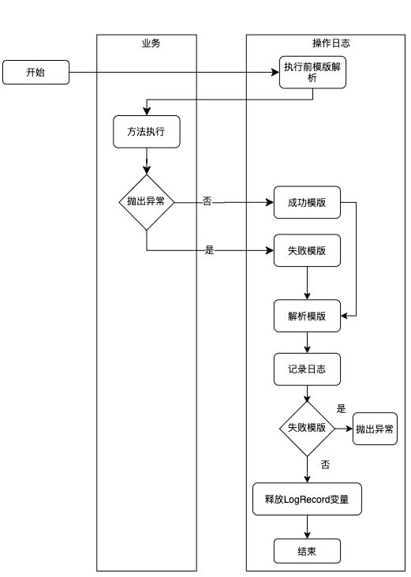

如何优雅地记录操作日志？¶
操作日志广泛存在于各个 B 端和一些 C 端系统中，比如：客服可以根据工单的操作日志快速知道哪些人对这个工单做了哪些操作，进而快速地定位问题。操作日志和系统日志不一样，操作日志必须要做到简单易懂。所以如何让操作日志不和业务逻辑耦合，如何让操作日志的内容易于理解，让操作日志的接入更加简单？上面这些都是本文要回答的问题，主要围绕着如何“优雅”地记录操作日志展开描述。
1. 操作日志的使用场景 -----------------
系统日志和操作日志的区别 系统日志 ：系统日志主要是为开发排查问题提供依据，一般打印在日志文件中；系统日志的可读性要求没那么高，日志中会包含代码的信息，比如在某个类的某一行打印了一个日志。操作日志 ：主要是对某个对象进行新增操作或者修改操作后记录下这个新增或者修改，操作日志要求可读性比较强，因为它主要是给用户看的，比如订单的物流信息，用户需要知道在什么时间发生了什么事情。再比如，客服对工单的处理记录信息。
{kind=link}
操作日志的记录格式大概分为下面几种：
- 单纯的文字记录，比如：2021-09-16 10:00 订单创建。
- 简单的动态的文本记录，比如：2021-09-16 10:00 订单创建，订单号：NO.11089999，其中涉及变量订单号“NO.11089999”。
- 修改类型的文本，包含修改前和修改后的值，比如：2021-09-16 10:00 用户小明修改了订单的配送地址：从“金灿灿小区”修改到“银盏盏小区” ，其中涉及变量配送的原地址“金灿灿小区”和新地址“银盏盏小区”。
- 修改表单，一次会修改多个字段。
2. 实现方式 ------------
2.1 使用 Canal 监听数据库记录操作日志 Canal 是一款基于 MySQL 数据库增量日志解析，提供增量数据订阅和消费的开源组件，通过采用监听数据库 Binlog 的方式，这样可以从底层知道是哪些数据做了修改，然后根据更改的数据记录操作日志¶
这种方式的优点是和业务逻辑完全分离。缺点也很明显，局限性太高，只能针对数据库的更改做操作日志记录，如果修改涉及到其他团队的 RPC 的调用，就没办法监听数据库了，举个例子：给用户发送通知，通知服务一般都是公司内部的公共组件，这时候只能在调用 RPC 的时候手工记录发送通知的操作日志了。
2.2 通过日志文件的方式记录¶
log.info("订单创建")
log.info("订单已经创建，订单编号:{}", orderNo)
log.info("修改了订单的配送地址：从“{}”修改到“{}”， "金灿灿小区", "银盏盏小区")
这种方式的操作记录需要解决三个问题。问题一：操作人如何记录 借助 SLF4J 中的 MDC 工具类，把操作人放在日志中，然后在日志中统一打印出来。首先在用户的拦截器中把用户的标识 Put 到 MDC 中。
@Component
public class UserInterceptor extends HandlerInterceptorAdapter {
@Override
public boolean preHandle(HttpServletRequest request, HttpServletResponse response, Object handler) throws Exception {
//获取到用户标识
String userNo = getUserNo(request);
//把用户 ID 放到 MDC 上下文中
MDC.put("userId", userNo);
return super.preHandle(request, response, handler);
}
private String getUserNo(HttpServletRequest request) {
// 通过 SSO 或者Cookie 或者 Auth信息获取到 当前登陆的用户信息
return null;
}
}
其次，把 userId 格式化到日志中，使用 %X{userId} 可以取到 MDC 中用户标识。
<pattern>"%d{yyyy-MM-dd HH:mm:ss.SSS} %t %-5level %X{userId} %logger{30}.%method:%L - %msg%n"</pattern>
问题二：操作日志如何和系统日志区分开 通过配置 Log 的配置文件，把有关操作日志的 Log 单独放到一日志文件中。
//不同业务日志记录到不同的文件
<appender name="businessLogAppender" class="ch.qos.logback.core.rolling.RollingFileAppender">
<File>logs/business.log</File>
<append>true</append>
<filter class="ch.qos.logback.classic.filter.LevelFilter">
<level>INFO</level>
<onMatch>ACCEPT</onMatch>
<onMismatch>DENY</onMismatch>
</filter>
<rollingPolicy class="ch.qos.logback.core.rolling.TimeBasedRollingPolicy">
<fileNamePattern>logs/业务A.%d.%i.log</fileNamePattern>
<maxHistory>90</maxHistory>
<timeBasedFileNamingAndTriggeringPolicy class="ch.qos.logback.core.rolling.SizeAndTimeBasedFNATP">
<maxFileSize>10MB</maxFileSize>
</timeBasedFileNamingAndTriggeringPolicy>
</rollingPolicy>
<encoder>
<pattern>"%d{yyyy-MM-dd HH:mm:ss.SSS} %t %-5level %X{userId} %logger{30}.%method:%L - %msg%n"</pattern>
<charset>UTF-8</charset>
</encoder>
</appender>
<logger name="businessLog" additivity="false" level="INFO">
<appender-ref ref="businessLogAppender"/>
</logger>
然后在 Java 代码中单独的记录业务日志。
//记录特定日志的声明
private final Logger businessLog = LoggerFactory.getLogger("businessLog");
//日志存储
businessLog.info("修改了配送地址");
问题三：如何生成可读懂的日志文案 可以采用 LogUtil 的方式，也可以采用切面的方式生成日志模板，后续内容将会进行介绍。这样就可以把日志单独保存在一个文件中，然后通过日志收集可以把日志保存在 Elasticsearch 或者数据库中，接下来看下如何生成可读的操作日志。
2.3 通过 LogUtil 的方式记录日志¶
LogUtil.log(orderNo, "订单创建", "小明")模板
LogUtil.log(orderNo, "订单创建，订单号"+"NO.11089999", "小明")
String template = "用户%s修改了订单的配送地址：从“%s”修改到“%s”"
LogUtil.log(orderNo, String.format(tempalte, "小明", "金灿灿小区", "银盏盏小区"), "小明")
这里解释下为什么记录操作日志的时候都绑定了一个 OrderNo，因为操作日志记录的是：某一个“时间”“谁”对“什么”做了什么“事情”。当查询业务的操作日志的时候，会查询针对这个订单的的所有操作，所以代码中加上了 OrderNo，记录操作日志的时候需要记录下操作人，所以传了操作人“小明”进来。 上面看起来问题并不大，在修改地址的业务逻辑方法中使用一行代码记录了操作日志，接下来再看一个更复杂的例子：
private OnesIssueDO updateAddress(updateDeliveryRequest request) {
DeliveryOrder deliveryOrder = deliveryQueryService.queryOldAddress(request.getDeliveryOrderNo());
// 更新派送信息，电话，收件人，地址
doUpdate(request);
String logContent = getLogContent(request, deliveryOrder);
LogUtils.logRecord(request.getOrderNo(), logContent, request.getOperator);
return onesIssueDO;
}
private String getLogContent(updateDeliveryRequest request, DeliveryOrder deliveryOrder) {
String template = "用户%s修改了订单的配送地址：从“%s”修改到“%s”";
return String.format(tempalte, request.getUserName(), deliveryOrder.getAddress(), request.getAddress);
}
可以看到上面的例子使用了两个方法代码，外加一个 getLogContent 的函数实现了操作日志的记录。当业务变得复杂后，记录操作日志放在业务代码中会导致业务的逻辑比较繁杂，最后导致 LogUtils.logRecord() 方法的调用存在于很多业务的代码中，而且类似 getLogContent() 这样的方法也散落在各个业务类中，对于代码的可读性和可维护性来说是一个灾难。下面介绍下如何避免这个灾难。
2.4 方法注解实现操作日志 为了解决上面问题，一般采用 AOP 的方式记录日志，让操作日志和业务逻辑解耦，接下来看一个简单的 AOP 日志的例子¶
@LogRecord(content="修改了配送地址")
public void modifyAddress(updateDeliveryRequest request){
// 更新派送信息 电话，收件人、地址
doUpdate(request);
}
我们可以在注解的操作日志上记录固定文案，这样业务逻辑和业务代码可以做到解耦，让我们的业务代码变得纯净起来。可能有同学注意到，上面的方式虽然解耦了操作日志的代码，但是记录的文案并不符合我们的预期，文案是静态的，没有包含动态的文案，因为我们需要记录的操作日志是： 用户%s 修改了订单的配送地址，从“%s”修改到“%s”。接下来，我们介绍一下如何优雅地使用 AOP 生成动态的操作日志。3. 优雅地支持 AOP 生成动态的操作日志 ---------------------------
3.1 动态模板¶
一提到动态模板，就会涉及到让变量通过占位符的方式解析模板，从而达到通过注解记录操作日志的目的。模板解析的方式有很多种，这里使用了 SpEL（Spring Expression Language，Spring 表达式语言）来实现。我们可以先写下期望的记录日志的方式，然后再看下能否实现这样的功能。
@LogRecord(content = "修改了订单的配送地址：从“#oldAddress”, 修改到“#request.address”")
public void modifyAddress(updateDeliveryRequest request, String oldAddress){
// 更新派送信息 电话，收件人、地址
doUpdate(request);
}
通过 SpEL 表达式引用方法上的参数，可以让变量填充到模板中达到动态的操作日志文本内容。 但是现在还有几个问题需要解决：
- 操作日志需要知道是哪个操作人修改的订单配送地址。
- 修改订单配送地址的操作日志需要绑定在配送的订单上，从而可以根据配送订单号查询出对这个配送订单的所有操作。
- 为了在注解上记录之前的配送地址是什么，在方法签名上添加了一个和业务无关的 oldAddress 的变量，这样就不优雅了。 为了解决前两个问题，我们需要把期望的操作日志使用形式改成下面的方式：
@LogRecord(
content = "修改了订单的配送地址：从“#oldAddress”, 修改到“#request.address”",
operator = "#request.userName", bizNo="#request.deliveryOrderNo")
public void modifyAddress(updateDeliveryRequest request, String oldAddress){
// 更新派送信息 电话，收件人、地址
doUpdate(request);
}
修改后的代码在注解上添加两个参数，一个是操作人，一个是操作日志需要绑定的对象。但是，在普通的 Web 应用中用户信息都是保存在一个线程上下文的静态方法中，所以 operator 一般是这样的写法（假定获取当前登陆用户的方式是 UserContext.getCurrentUser()）。
这样的话，每个 @LogRecord 的注解上的操作人都是这么长一串。为了避免过多的重复代码，我们可以把注解上的 operator 参数设置为非必填，这样用户可以填写操作人。但是，如果用户不填写我们就取 UserContext 的 user（下文会介绍如何取 user ）。最后，最简单的日志变成了下面的形式：
@LogRecord(content = "修改了订单的配送地址：从“#oldAddress”, 修改到“#request.address”",
bizNo="#request.deliveryOrderNo")
public void modifyAddress(updateDeliveryRequest request, String oldAddress){
// 更新派送信息 电话，收件人、地址
doUpdate(request);
}
接下来，我们需要解决第三个问题：为了记录业务操作记录添加了一个 oldAddress 变量，不管怎么样这都不是一个好的实现方式，所以接下来，我们需要把 oldAddress 变量从修改地址的方法签名上去掉。但是操作日志确实需要 oldAddress 变量，怎么办呢？ 要么和产品经理 PK 一下，让产品经理把文案从“修改了订单的配送地址：从 xx 修改到 yy” 改为 “修改了订单的配送地址为：yy”。但是从用户体验上来看，第一种文案更人性化一些，显然我们不会 PK 成功的。那么我们就必须要把这个 oldAddress 查询出来然后供操作日志使用了。还有一种解决办法是：把这个参数放到操作日志的线程上下文中，供注解上的模板使用。我们按照这个思路再改下操作日志的实现代码。
@LogRecord(content = "修改了订单的配送地址：从“#oldAddress”, 修改到“#request.address”",
bizNo="#request.deliveryOrderNo")
public void modifyAddress(updateDeliveryRequest request){
// 查询出原来的地址是什么
LogRecordContext.putVariable("oldAddress", DeliveryService.queryOldAddress(request.getDeliveryOrderNo()));
// 更新派送信息 电话，收件人、地址
doUpdate(request);
}
这时候可以看到，LogRecordContext 解决了操作日志模板上使用方法参数以外变量的问题，同时避免了为了记录操作日志修改方法签名的设计。虽然已经比之前的代码好了些，但是依然需要在业务代码里面加了一行业务逻辑无关的代码，如果有“强迫症”的同学还可以继续往下看，接下来我们会讲解自定义函数的解决方案。下面再看另一个例子：
@LogRecord(content = "修改了订单的配送员：从“#oldDeliveryUserId”, 修改到“#request.userId”",
bizNo="#request.deliveryOrderNo")
public void modifyAddress(updateDeliveryRequest request){
// 查询出原来的地址是什么
LogRecordContext.putVariable("oldDeliveryUserId", DeliveryService.queryOldDeliveryUserId(request.getDeliveryOrderNo()));
// 更新派送信息 电话，收件人、地址
doUpdate(request);
}
这个操作日志的模板最后记录的内容是这样的格式：修改了订单的配送员：从 “10090”，修改到 “10099”，显然用户看到这样的操作日志是不明白的。用户对于用户 ID 是 10090 还是 10099 并不了解，用户期望看到的是：修改了订单的配送员：从“张三（18910008888）”，修改到“小明（13910006666）”。用户关心的是配送员的姓名和电话。但是我们方法中传递的参数只有配送员的 ID，没有配送员的姓名可电话。我们可以通过上面的方法，把用户的姓名和电话查询出来，然后通过 LogRecordContext 实现。 但是，“强迫症”是不期望操作日志的代码嵌入在业务逻辑中的。接下来，我们考虑另一种实现方式：自定义函数。如果我们可以通过自定义函数把用户 ID 转换为用户姓名和电话，那么就能解决这一问题，按照这个思路，我们把模板修改为下面的形式：
@LogRecord(content = "修改了订单的配送员：从“{deliveryUser{#oldDeliveryUserId}}”, 修改到“{deveryUser{#request.userId}}”",
bizNo="#request.deliveryOrderNo")
public void modifyAddress(updateDeliveryRequest request){
// 查询出原来的地址是什么
LogRecordContext.putVariable("oldDeliveryUserId", DeliveryService.queryOldDeliveryUserId(request.getDeliveryOrderNo()));
// 更新派送信息 电话，收件人、地址
doUpdate(request);
}
其中 deliveryUser 是自定义函数，使用大括号把 Spring 的 SpEL 表达式包裹起来，这样做的好处：一是把 SpEL（Spring Expression Language，Spring 表达式语言）和自定义函数区分开便于解析；二是如果模板中不需要 SpEL 表达式解析可以容易的识别出来，减少 SpEL 的解析提高性能。这时候我们发现上面代码还可以优化成下面的形式：
@LogRecord(content = "修改了订单的配送员：从“{queryOldUser{#request.deliveryOrderNo()}}”, 修改到“{deveryUser{#request.userId}}”",
bizNo="#request.deliveryOrderNo")
public void modifyAddress(updateDeliveryRequest request){
// 更新派送信息 电话，收件人、地址
doUpdate(request);
}
这样就不需要在 modifyAddress 方法中通过 LogRecordContext.putVariable() 设置老的快递员了，通过直接新加一个自定义函数 queryOldUser() 参数把派送订单传递进去，就能查到之前的配送人了，只需要让方法的解析在 modifyAddress() 方法执行之前运行。这样的话，我们让业务代码又变得纯净了起来，同时也让“强迫症”不再感到难受了。4. 代码实现解析 --------------
4.1 代码结构¶
{kind=link}
上面的操作日志主要是通过一个 AOP 拦截器实现的，整体主要分为 AOP 模块、日志解析模块、日志保存模块、Starter 模块；组件提供了 4 个扩展点，分别是：自定义函数、默认处理人、业务保存和查询；业务可以根据自己的业务特性定制符合自己业务的逻辑。
4.2 模块介绍¶
有了上面的分析，已经得出一种我们期望的操作日志记录的方式，那么接下来看看如何实现上面的逻辑。实现主要分为下面几个步骤：
- AOP 拦截逻辑
- 解析逻辑
-
- 模板解析
- LogContext 逻辑
- 默认的 operator 逻辑
- 自定义函数逻辑
- 默认的日志持久化逻辑
- Starter 封装逻辑
4.2.1 AOP 拦截逻辑 这块逻辑主要是一个拦截器，针对 @LogRecord 注解分析出需要记录的操作日志，然后把操作日志持久化，这里把注解命名为 @LogRecordAnnotation。接下来，我们看下注解的定义¶
@Target({ElementType.METHOD})
@Retention(RetentionPolicy.RUNTIME)
@Inherited
@Documented
public @interface LogRecordAnnotation {
String success();
String fail() default "";
String operator() default "";
String bizNo();
String category() default "";
String detail() default "";
String condition() default "";
}
注解中除了上面提到参数外，还增加了 fail、category、detail、condition 等参数，这几个参数是为了满足特定的场景，后面还会给出具体的例子。
为了保持简单，组件的必填参数就两个。业务中的 AOP 逻辑大部分是使用 @Aspect 注解实现的，但是基于注解的 AOP 在 Spring boot 1.5 中兼容性是有问题的，组件为了兼容 Spring boot1.5 的版本我们手工实现 Spring 的 AOP 逻辑。
切面选择 AbstractBeanFactoryPointcutAdvisor 实现，切点是通过 StaticMethodMatcherPointcut 匹配包含 LogRecordAnnotation 注解的方法。通过实现 MethodInterceptor 接口实现操作日志的增强逻辑。
下面是拦截器的切点逻辑：
{kind=link}
{kind=link}
public class LogRecordPointcut extends StaticMethodMatcherPointcut implements Serializable {
// LogRecord的解析类
private LogRecordOperationSource logRecordOperationSource;
@Override
public boolean matches(@NonNull Method method, @NonNull Class<?> targetClass) {
// 解析 这个 method 上有没有 @LogRecordAnnotation 注解，有的话会解析出来注解上的各个参数
return !CollectionUtils.isEmpty(logRecordOperationSource.computeLogRecordOperations(method, targetClass));
}
void setLogRecordOperationSource(LogRecordOperationSource logRecordOperationSource) {
this.logRecordOperationSource = logRecordOperationSource;
}
}
切面的增强逻辑主要代码如下：
@Override
public Object invoke(MethodInvocation invocation) throws Throwable {
Method method = invocation.getMethod();
// 记录日志
return execute(invocation, invocation.getThis(), method, invocation.getArguments());
}
private Object execute(MethodInvocation invoker, Object target, Method method, Object[] args) throws Throwable {
Class<?> targetClass = getTargetClass(target);
Object ret = null;
MethodExecuteResult methodExecuteResult = new MethodExecuteResult(true, null, "");
LogRecordContext.putEmptySpan();
Collection<LogRecordOps> operations = new ArrayList<>();
Map<String, String> functionNameAndReturnMap = new HashMap<>();
try {
operations = logRecordOperationSource.computeLogRecordOperations(method, targetClass);
List<String> spElTemplates = getBeforeExecuteFunctionTemplate(operations);
//业务逻辑执行前的自定义函数解析
functionNameAndReturnMap = processBeforeExecuteFunctionTemplate(spElTemplates, targetClass, method, args);
} catch (Exception e) {
log.error("log record parse before function exception", e);
}
try {
ret = invoker.proceed();
} catch (Exception e) {
methodExecuteResult = new MethodExecuteResult(false, e, e.getMessage());
}
try {
if (!CollectionUtils.isEmpty(operations)) {
recordExecute(ret, method, args, operations, targetClass,
methodExecuteResult.isSuccess(), methodExecuteResult.getErrorMsg(), functionNameAndReturnMap);
}
} catch (Exception t) {
//记录日志错误不要影响业务
log.error("log record parse exception", t);
} finally {
LogRecordContext.clear();
}
if (methodExecuteResult.throwable != null) {
throw methodExecuteResult.throwable;
}
return ret;
}
拦截逻辑的流程：  可以看到，操作日志的记录持久化是在方法执行完之后执行的，当方法抛出异常之后会先捕获异常，等操作日志持久化完成后再抛出异常。在业务的方法执行之前，会对提前解析的自定义函数求值，解决了前面提到的需要查询修改之前的内容。
{kind=link}
4.2.2 解析逻辑 模板解析 Spring 3 提供了一个非常强大的功能：Spring EL，SpEL 在 Spring 产品中是作为表达式求值的核心基础模块，它本身是可以脱离 Spring 独立使用的。举个例子¶
public static void main(String[] args) {
SpelExpressionParser parser = new SpelExpressionParser();
Expression expression = parser.parseExpression("#root.purchaseName");
Order order = new Order();
order.setPurchaseName("张三");
System.out.println(expression.getValue(order));
}
这个方法将打印 “张三”。LogRecord 解析的类图如下：
解析核心类 ：LogRecordValueParser 里面封装了自定义函数和 SpEL 解析类 LogRecordExpressionEvaluator。
{kind=link}
public class LogRecordExpressionEvaluator extends CachedExpressionEvaluator {
private Map<ExpressionKey, Expression> expressionCache = new ConcurrentHashMap<>(64);
private final Map<AnnotatedElementKey, Method> targetMethodCache = new ConcurrentHashMap<>(64);
public String parseExpression(String conditionExpression, AnnotatedElementKey methodKey, EvaluationContext evalContext) {
return getExpression(this.expressionCache, methodKey, conditionExpression).getValue(evalContext, String.class);
}
}
LogRecordExpressionEvaluator 继承自 CachedExpressionEvaluator 类，这个类里面有两个 Map，一个是 expressionCache 一个是 targetMethodCache。在上面的例子中可以看到，SpEL 会解析成一个 Expression 表达式，然后根据传入的 Object 获取到对应的值，所以 expressionCache 是为了缓存方法、表达式和 SpEL 的 Expression 的对应关系，让方法注解上添加的 SpEL 表达式只解析一次。 下面的 targetMethodCache 是为了缓存传入到 Expression 表达式的 Object。核心的解析逻辑是上面最后一行代码。
getExpression(this.expressionCache, methodKey, conditionExpression).getValue(evalContext, String.class);
getExpression 方法会从 expressionCache 中获取到 @LogRecordAnnotation 注解上的表达式的解析 Expression 的实例，然后调用 getValue 方法，getValue 传入一个 evalContext 就是类似上面例子中的 order 对象。其中 Context 的实现将会在下文介绍。日志上下文实现 下面的例子把变量放到了 LogRecordContext 中，然后 SpEL 表达式就可以顺利的解析方法上不存在的参数了，通过上面的 SpEL 的例子可以看出，要把方法的参数和 LogRecordContext 中的变量都放到 SpEL 的 getValue 方法的 Object 中才可以顺利的解析表达式的值。下面看下如何实现：
@LogRecord(content = "修改了订单的配送员：从“{deveryUser{#oldDeliveryUserId}}”, 修改到“{deveryUser{#request.getUserId()}}”",
bizNo="#request.getDeliveryOrderNo()")
public void modifyAddress(updateDeliveryRequest request){
// 查询出原来的地址是什么
LogRecordContext.putVariable("oldDeliveryUserId", DeliveryService.queryOldDeliveryUserId(request.getDeliveryOrderNo()));
// 更新派送信息 电话，收件人、地址
doUpdate(request);
}
在 LogRecordValueParser 中创建了一个 EvaluationContext，用来给 SpEL 解析方法参数和 Context 中的变量。相关代码如下：
EvaluationContext evaluationContext = expressionEvaluator.createEvaluationContext(method, args, targetClass, ret, errorMsg, beanFactory);
在解析的时候调用 getValue 方法传入的参数 evalContext，就是上面这个 EvaluationContext 对象。下面是 LogRecordEvaluationContext 对象的继承体系：
LogRecordEvaluationContext 做了三个事情：
{kind=link}
- 把方法的参数都放到 SpEL 解析的 RootObject 中。
- 把 LogRecordContext 中的变量都放到 RootObject 中。
- 把方法的返回值和 ErrorMsg 都放到 RootObject 中。 LogRecordEvaluationContext 的代码如下：
public class LogRecordEvaluationContext extends MethodBasedEvaluationContext {
public LogRecordEvaluationContext(Object rootObject, Method method, Object[] arguments,
ParameterNameDiscoverer parameterNameDiscoverer, Object ret, String errorMsg) {
//把方法的参数都放到 SpEL 解析的 RootObject 中
super(rootObject, method, arguments, parameterNameDiscoverer);
//把 LogRecordContext 中的变量都放到 RootObject 中
Map<String, Object> variables = LogRecordContext.getVariables();
if (variables != null && variables.size() > 0) {
for (Map.Entry<String, Object> entry : variables.entrySet()) {
setVariable(entry.getKey(), entry.getValue());
}
}
//把方法的返回值和 ErrorMsg 都放到 RootObject 中
setVariable("_ret", ret);
setVariable("_errorMsg", errorMsg);
}
}
下面是 LogRecordContext 的实现，这个类里面通过一个 ThreadLocal 变量保持了一个栈，栈里面是个 Map，Map 对应了变量的名称和变量的值。
public class LogRecordContext {
private static final InheritableThreadLocal<Stack<Map<String, Object>>> variableMapStack = new InheritableThreadLocal<>();
//其他省略....
}
上面使用了 InheritableThreadLocal，所以在线程池的场景下使用 LogRecordContext 会出现问题，如果支持线程池可以使用阿里巴巴开源的 TTL 框架。那这里为什么不直接设置一个 ThreadLocal\
@LogRecord(content = "修改了订单的配送员：从“{deveryUser{#oldDeliveryUserId}}”, 修改到“{deveryUser{#request.getUserId()}}”",
bizNo="#request.getDeliveryOrderNo()")
public void modifyAddress(updateDeliveryRequest request){
// 查询出原来的地址是什么
LogRecordContext.putVariable("oldDeliveryUserId", DeliveryService.queryOldDeliveryUserId(request.getDeliveryOrderNo()));
// 更新派送信息 电话，收件人、地址
doUpdate(request);
}
上面代码的执行流程如下：
看起来没有什么问题，但是使用 LogRecordAnnotation 的方法里面嵌套了另一个使用 LogRecordAnnotation 方法的时候，流程就变成下面的形式：
可以看到，当方法二执行了释放变量后，继续执行方法一的 logRecord 逻辑，此时解析的时候 ThreadLocal\
{kind=link}
{kind=link}
{kind=link}
public interface IOperatorGetService {
/**
* 可以在里面外部的获取当前登陆的用户，比如 UserContext.getCurrentUser()
*
* @return 转换成Operator返回
*/
Operator getUser();
}
下面给出了从用户上下文中获取用户的例子：
public class DefaultOperatorGetServiceImpl implements IOperatorGetService {
@Override
public Operator getUser() {
//UserUtils 是获取用户上下文的方法
return Optional.ofNullable(UserUtils.getUser())
.map(a -> new Operator(a.getName(), a.getLogin()))
.orElseThrow(()->new IllegalArgumentException("user is null"));
}
}
组件在解析 operator 的时候，就判断注解上的 operator 是否是空，如果注解上没有指定，我们就从 IOperatorGetService 的 getUser 方法获取了。如果都获取不到，就会报错。
String realOperatorId = "";
if (StringUtils.isEmpty(operatorId)) {
if (operatorGetService.getUser() == null || StringUtils.isEmpty(operatorGetService.getUser().getOperatorId())) {
throw new IllegalArgumentException("user is null");
}
realOperatorId = operatorGetService.getUser().getOperatorId();
} else {
spElTemplates = Lists.newArrayList(bizKey, bizNo, action, operatorId, detail);
}
自定义函数逻辑 自定义函数的类图如下：
下面是 IParseFunction 的接口定义：executeBefore 函数代表了自定义函数是否在业务代码执行之前解析，上面提到的查询修改之前的内容。
{kind=link}
public interface IParseFunction {
default boolean executeBefore(){
return false;
}
String functionName();
String apply(String value);
}
ParseFunctionFactory 的代码比较简单，它的功能是把所有的 IParseFunction 注入到函数工厂中。
public class ParseFunctionFactory {
private Map<String, IParseFunction> allFunctionMap;
public ParseFunctionFactory(List<IParseFunction> parseFunctions) {
if (CollectionUtils.isEmpty(parseFunctions)) {
return;
}
allFunctionMap = new HashMap<>();
for (IParseFunction parseFunction : parseFunctions) {
if (StringUtils.isEmpty(parseFunction.functionName())) {
continue;
}
allFunctionMap.put(parseFunction.functionName(), parseFunction);
}
}
public IParseFunction getFunction(String functionName) {
return allFunctionMap.get(functionName);
}
public boolean isBeforeFunction(String functionName) {
return allFunctionMap.get(functionName) != null && allFunctionMap.get(functionName).executeBefore();
}
}
DefaultFunctionServiceImpl 的逻辑就是根据传入的函数名称 functionName 找到对应的 IParseFunction，然后把参数传入到 IParseFunction 的 apply 方法上最后返回函数的值。
public class DefaultFunctionServiceImpl implements IFunctionService {
private final ParseFunctionFactory parseFunctionFactory;
public DefaultFunctionServiceImpl(ParseFunctionFactory parseFunctionFactory) {
this.parseFunctionFactory = parseFunctionFactory;
}
@Override
public String apply(String functionName, String value) {
IParseFunction function = parseFunctionFactory.getFunction(functionName);
if (function == null) {
return value;
}
return function.apply(value);
}
@Override
public boolean beforeFunction(String functionName) {
return parseFunctionFactory.isBeforeFunction(functionName);
}
}
4.2.3 日志持久化逻辑¶
同样在 LogRecordInterceptor 的代码中引用了 ILogRecordService，这个 Service 主要包含了日志记录的接口。
public interface ILogRecordService {
/**
* 保存 log
*
* @param logRecord 日志实体
*/
void record(LogRecord logRecord);
}
业务可以实现这个保存接口，然后把日志保存在任何存储介质上。这里给了一个 2.2 节介绍的通过 http://log.info 保存在日志文件中的例子，业务可以把保存设置成异步或者同步，可以和业务放在一个事务中保证操作日志和业务的一致性，也可以新开辟一个事务，保证日志的错误不影响业务的事务。业务可以保存在 Elasticsearch、数据库或者文件中，用户可以根据日志结构和日志的存储实现相应的查询逻辑。
@Slf4j
public class DefaultLogRecordServiceImpl implements ILogRecordService {
@Override
// @Transactional(propagation = Propagation.REQUIRES_NEW)
public void record(LogRecord logRecord) {
log.info("【logRecord】log={}", logRecord);
}
}
4.2.4 Starter 逻辑封装 上面逻辑代码已经介绍完毕，那么接下来需要把这些组件组装起来，然后让用户去使用。在使用这个组件的时候只需要在 Springboot 的入口上添加一个注解 @EnableLogRecord(tenant = "com.mzt.test")。其中 tenant 代表租户，是为了多租户使用的¶
@SpringBootApplication(exclude = DataSourceAutoConfiguration.class)
@EnableTransactionManagement
@EnableLogRecord(tenant = "com.mzt.test")
public class Main {
public static void main(String[] args) {
SpringApplication.run(Main.class, args);
}
}
再看下 EnableLogRecord 的代码，代码中 Import 了 LogRecordConfigureSelector.class，在 LogRecordConfigureSelector 类中暴露了 LogRecordProxyAutoConfiguration 类。
@Target(ElementType.TYPE)
@Retention(RetentionPolicy.RUNTIME)
@Documented
@Import(LogRecordConfigureSelector.class)
public @interface EnableLogRecord {
String tenant();
AdviceMode mode() default AdviceMode.PROXY;
}
LogRecordProxyAutoConfiguration 就是装配上面组件的核心类了，代码如下：
@Configuration
@Slf4j
public class LogRecordProxyAutoConfiguration implements ImportAware {
private AnnotationAttributes enableLogRecord;
@Bean
@Role(BeanDefinition.ROLE_INFRASTRUCTURE)
public LogRecordOperationSource logRecordOperationSource() {
return new LogRecordOperationSource();
}
@Bean
@ConditionalOnMissingBean(IFunctionService.class)
public IFunctionService functionService(ParseFunctionFactory parseFunctionFactory) {
return new DefaultFunctionServiceImpl(parseFunctionFactory);
}
@Bean
public ParseFunctionFactory parseFunctionFactory(@Autowired List<IParseFunction> parseFunctions) {
return new ParseFunctionFactory(parseFunctions);
}
@Bean
@ConditionalOnMissingBean(IParseFunction.class)
public DefaultParseFunction parseFunction() {
return new DefaultParseFunction();
}
@Bean
@Role(BeanDefinition.ROLE_INFRASTRUCTURE)
public BeanFactoryLogRecordAdvisor logRecordAdvisor(IFunctionService functionService) {
BeanFactoryLogRecordAdvisor advisor =
new BeanFactoryLogRecordAdvisor();
advisor.setLogRecordOperationSource(logRecordOperationSource());
advisor.setAdvice(logRecordInterceptor(functionService));
return advisor;
}
@Bean
@Role(BeanDefinition.ROLE_INFRASTRUCTURE)
public LogRecordInterceptor logRecordInterceptor(IFunctionService functionService) {
LogRecordInterceptor interceptor = new LogRecordInterceptor();
interceptor.setLogRecordOperationSource(logRecordOperationSource());
interceptor.setTenant(enableLogRecord.getString("tenant"));
interceptor.setFunctionService(functionService);
return interceptor;
}
@Bean
@ConditionalOnMissingBean(IOperatorGetService.class)
@Role(BeanDefinition.ROLE_APPLICATION)
public IOperatorGetService operatorGetService() {
return new DefaultOperatorGetServiceImpl();
}
@Bean
@ConditionalOnMissingBean(ILogRecordService.class)
@Role(BeanDefinition.ROLE_APPLICATION)
public ILogRecordService recordService() {
return new DefaultLogRecordServiceImpl();
}
@Override
public void setImportMetadata(AnnotationMetadata importMetadata) {
this.enableLogRecord = AnnotationAttributes.fromMap(
importMetadata.getAnnotationAttributes(EnableLogRecord.class.getName(), false));
if (this.enableLogRecord == null) {
log.info("@EnableCaching is not present on importing class");
}
}
}
这个类继承 ImportAware 是为了拿到 EnableLogRecord 上的租户属性，这个类使用变量 logRecordAdvisor 和 logRecordInterceptor 装配了 AOP，同时把自定义函数注入到了 logRecordAdvisor 中。对外扩展类 ：分别是IOperatorGetService、ILogRecordService、IParseFunction。业务可以自己实现相应的接口，因为配置了 @ConditionalOnMissingBean，所以用户的实现类会覆盖组件内的默认实现。5. 总结 ----------
这篇文章介绍了操作日志的常见写法，以及如何让操作日志的实现更加简单、易懂；通过组件的四个模块，介绍了组件的具体实现。对于上面的组件介绍，大家如果有疑问，也欢迎在文末留言，我们会进行答疑。6. 作者简介 ------------
站通，2020 年加入美团，基础研发平台/研发质量及效率部工程师。7. 参考资料¶
- Canal - spring-framework - Spring Expression Language (SpEL) - ThreadLocal、InheritableThreadLocal、TransmittableThreadLocal 三者之间区别